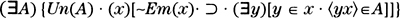

Julia Kristeva changes the order of things; she always destroys the latest preconception, the one we thought we could be comforted by, the one of which we could be proud: what she displaces is the already-said, that is to say, the insistence of the signified, that is to say, silliness; what she subverts is the authority of monologic science and of filiation. Her work is entirely new and precise …
—Roland Barthes (1970, p. 19), concerning Kristeva’s Séméiotiké: Researches for a Semioanalysis
The works of Julia Kristeva touch on many areas, from literary criticism to psychoanalysis to political philosophy. We shall analyze here some excerpts from her early work on linguistics and semiotics. These texts, which date from the late 1960s to the mid-1970s, cannot properly be called poststructuralist; they belong, rather, to the worst excesses of structuralism. Kristeva’s declared goal is to construct a formal theory of poetic language. This goal is, however, ambiguous because, on the one hand, she asserts that poetic language is “a formal system whose theorization can be based on [mathematical] set theory”, and on the other hand, she says in a footnote that this is “only metaphorical”.
Metaphor or not, this enterprise faces a serious problem: What relation, if any, does poetic language have with mathematical set theory? Kristeva doesn’t really say. She invokes technical notions concerning infinite sets, whose relevance to poetic language is difficult to fathom, especially since no argument is given. Moreover, her presentation of the mathematics contains some gross errors, for example with regard to Gödel’s theorem. Let us emphasize that Kristeva has long since abandoned this approach; nevertheless, it is too typical of the type of work we are criticizing for us to pass it over in silence.
The excerpts below come mainly from Kristeva’s celebrated book Séméiotiké: Researches for a Semioanalysis (1969).36 One of her interpreters describes this work as follows:
What is most striking about Kristeva’s work … is the competence with which it is presented, the intense single-mindedness with which it is pursued, and finally, its intricate rigour. No resources are spared: existing theories of logic are invoked and, at one point, quantum mechanics … (Lechte 1990, p. 109)
Let us therefore examine some examples of this competence and rigor:
… science is a logical endeavor based on the Greek (Indo-European) sentence that is constructed as subject-predicate and that proceeds by identification, determination, causality.37 Modern logic from Frege and Peano through Lukasiewicz, Ackermann or Church, which moves in the dimensions 0–1, and even Boole’s logic which, starting from set theory, gives formalizations that are more isomorphic to the functioning of language, are inoperative in the sphere of poetic language where 1 is not a limit.
It is therefore impossible to formalize poetic language using the existing logical (scientific) procedures without denaturing it. A literary semiotics has to be made starting from a poetic logic, in which the concept of power of the continuum38 would encompass the interval from 0 to 2, a continuum where 0 denotes and 1 is implicitly transgressed. (Kristeva 1969, pp. 150–151, italics in the original39)
In this excerpt, Kristeva makes one correct assertion and two mistakes. The correct assertion is that poetic sentences cannot, in general, be evaluated as true or false. Now, in mathematical logic, the symbols 0 and 1 are used to denote “false” and “true”, respectively; it is in this sense that Boole’s logic uses the set {0,1}. Kristeva’s allusion to mathematical logic is thus correct, though it adds nothing to the initial observation. But in the second paragraph, she seems to confuse the set {0, 1}, which is composed of the two elements 0 and 1, with the interval [0, 1], which contains all the real numbers between 0 and 1. The latter set, unlike the former, is an infinite set, which, moreover, has the power of the continuum (see note 38). Besides, Kristeva lays great stress on the fact that she has a set (the interval from 0 to 2) that “transgresses” 1, but from the point of view she purports to adopt—that of the cardinality (or power) of sets—there is no difference between the interval [0, 1] and the interval [0, 2]: both have the power of the continuum.
In the subsequent text, these two errors become even more manifest:
In this “power of the continuum” from zero to the specifically poetic double, one notices that the linguistic, psychic, and social “prohibition” [interdit] is 1 (God, the law, the definition), and that the only linguistic practice that “escapes” from this prohibition is poetic discourse. It is no accident that the inadequacies of Aristotelian logic in its application to language were pointed out, on the one hand, by the Chinese philosopher Chang Tung-sun who came from another linguistic realm (that of ideograms) where the Yin-Yang “dialogue” is deployed in place of God, and on the other hand, by Bakhtin who attempted to go beyond the Formalists by a dynamic theorization carried out in a revolutionary society. For him, narrative discourse, which he assimilates to epic discourse, is a prohibition, a “monologism”, a subordination of the code to 1, to God. Consequently, the epic is religious and theological, and any “realist” narration obeying the 0–1 logic is dogmatic. The realist novel that Bakhtin calls monologic (Tolstoy) tends to evolve in that space. Realist description, the definition of a “personality type” [caractère], the creation of a “character” [personnage], the development of a “subject”: all these descriptive elements of narrative belong to the interval 0–1 and thus are monologic. The only discourse in which the 0–2 poetic logic is fully realized would be that of the carnival: it transgresses the rules of the linguistic code, as well as that of social morality, by adopting a dream-like logic.
… A new approach to poetic texts can be sketched starting from this term [dialogism] that literary semiotics can adopt. The logic implied by “dialogism” is simultaneously: … 3) A logic of the “transfinite”40, a concept that we borrow from Cantor, which introduces, starting from the “power of the continuum” of poetic language (0–2), a second formative principle, namely: a poetic sequence is “next-larger” (not causally deduced) to all the preceding sequences of the Aristotelian series (scientific, monologic, narrative). Then, the ambivalent space of the novel presents itself as ordered by two formative principles: the monologic (each successive sequence is determined by the preceding one) and the dialogic (transfinite sequences that are next-larger to the preceding causal sequence). [Footnote: Let us emphasize that the introduction of notions from set theory in an analysis of poetic language is only metaphorical: it is possible because an analogy can be established between the relations Aristotelian logic/poetic logic on the one hand, and denumerable/infinite on the other.] (Kristeva 1969, pp. 151–153, italics in the original)
At the end of this passage, Kristeva concedes that her “theory” is only a metaphor. But even at that level, she provides no justification: far from having established an analogy between “Aristotelian logic/poetic logic” and “denumerable/infinite”, she has merely invoked the names of these latter concepts, without giving the slightest explanation of their meaning or, above all, their relevance (even metaphorical) for “poetic logic”. For what it’s worth, the theory of transfinite numbers has nothing to do with causal deduction.
Later on in the text, Kristeva returns to mathematical logic:
For us poetic language is not a code encompassing the others, but a class A that has the same power as the function ϕ(x1… xn) of the infinity of the linguistic code (see the existence theorem, cf. p. 189), and all the “other languages” (the “usual” language, the “meta-languages”, etc.) are quotients of A over more restricted extents [étendues] (limited by the rules of the subject-predicate construction, for example, as being at the basis of formal logic), and disguising, because of this limitation, the morphology of the function ϕ(x1… xn).
Poetic language (which we shall henceforth denote by the initials pl) contains the code of linear logic. Moreover, we can find in it all the combinatoric figures that algebra has formalized in a system of artificial signs and that are not externalized at the level of the manifestation of the usual language.…
The pl cannot, therefore, be a sub-code. It is the infinite ordered code, a complementary system of codes from which one may isolate (by operatory abstraction and by way of proof of a theorem) a usual language, a scientific metalanguage and all the artificial systems of signs—which are all only subsets of this infinite, externalizing the rules of its order over a restricted space (their power is lesser relative to that of the pl that is surjected onto them). (Kristeva 1969, pp. 178–179)
These paragraphs are meaningless, though Kristeva has very ably strung together a series of mathematical terms. But it gets even better:
Having assumed that poetic language is a formal system whose theorization can be based on set theory, we may observe, at the same time, that the functioning of poetic meaning obeys the principles designated by the axiom of choice. This axiom specifies that there exists a single-valued correspondence, represented by a class, which associates to each non-empty set of the theory (of the system) one of its elements:

[Un(A) — “A is single-valued”; Em(x) —“the class x is empty”.]
Said otherwise, one can choose simultaneously an element in each of the non-empty sets that we consider. So stated, the axiom is applicable in our universe E of the pl. It makes precise how every sequence contains the message of the book. (Kristeva 1969, p. 189, italics in the original)
These paragraphs (as well as the following ones) illustrate brilliantly the acerbic comments of the sociologist Stanislav Andreski quoted in our Introduction (here). Kristeva never explains the relevance of the axiom of choice for linguistics (in our opinion it has none). The axiom of choice says that if we have a collection of sets, each of which contains at least one element, then there exists a set containing exactly one element “chosen” from each of the original sets. This axiom permits one to assert the existence of certain sets without constructing them explicitly (one does not say how the “choice” is made). The introduction of this axiom in mathematical set theory is motivated by the study of infinite sets, or of infinite collections of sets. Where does one find such sets in poetry? To say that the axiom of choice “makes precise how every sequence contains the message of the book” is ludicrous—we’re unsure whether this assertion does more violence to mathematics or to literature.
Nevertheless, Kristeva continues:
The compatibility of the axiom of choice and the generalized continuum hypothesis41 with the axioms of set theory places us at the level of reasoning about the theory, thus in a metatheory (and such is the status of semiotic reasoning) whose metatheorems have been perfected [mis au point] by Gödel. (Kristeva 1969, p. 189, italics in the original)
Here again, Kristeva is trying to impress the reader with technical jargon. She has indeed cited some very important (meta)-theorems of mathematical logic, but without bothering to explain to the reader the content of these theorems, much less their relevance for linguistics. (Let us note that the set of all texts ever written, in the entirety of human history, is a finite set. Moreover, any natural language—for example, English or Chinese—has a finite alphabet; a sentence, or even a book, is a finite sequence of letters. Therefore, even the set of all finite sequences of letters in all conceivable books, without any restriction on their length, is a denumerable infinite set. It is hard to see how the continuum hypothesis, which concerns nondenumerable infinite sets, could have any application in linguistics.)
All this does not prevent Kristeva from pushing onward:
One finds there precisely the existence theorems that we do not intend to develop here, but that interest us to the extent that they provide concepts allowing us to pose in a new way—a way that would be impossible without them—the object that interests us: poetic language. The generalized existence theorem postulates, as one knows, that:
“If ϕ(x1,…, xn) is a primitive propositional function containing no free variables other than x1,…, xn, without necessarily containing all of them, there exists a class A such that, for all sets x1 ,…, xn, 〈x1,…, xn〉 ∈ A · ≡ · ϕ(x1,…, xn).”42
In the poetic language, this theorem denotes the different sequences as equivalent to a function encompassing all of them. Two consequences follow from this: 1) it stipulates the non-causal chaining [enchaînement] of poetic language and the expansion of the letter in the book; 2) it stresses the range [portée] of this literature which puts forth its message in the smallest sequences: the meaning (ϕ) is contained in the mode of junction of words, of sentences …
Lautréamont was one of the first to consciously practice this theorem.43
The notion of constructibility implied by the axiom of choice associated to what we have just set forth for poetic language, explains the impossibility of establishing a contradiction in the space of poetic language. This observation is close to Gödel’s observation concerning the impossibility of proving the inconsistency [contradiction] of a system by means formalized within the system. (Kristeva 1969, pp. 189–190, italics in the original)
In this excerpt, Kristeva shows that she does not understand the mathematical concepts she invokes. First of all, the axiom of choice does not imply any “notion of constructibility”; quite the contrary, it allows one to assert the existence of some sets without having a rule to “construct” them (see above). Secondly, Gödel proved exactly the opposite of what Kristeva claims, namely the impossibility of establishing, by means formalizable within the system, the system’s consistency (i.e. noncontradiction).44
Kristeva has also tried to apply set theory to political philosophy. The following excerpt is taken from her book Revolution in Poetic Language (1974):
A discovery of Marx, which has not heretofore been sufficiently emphasized, can be sketched here. If each individual or each social organism represents a set, the set of all sets that the State should be does not exist. The State as set of all sets is a fiction, it cannot exist, just as there does not exist a set of all sets in set theory.45 [Footnote: On this topic, cf. Bourbaki46, but also, concerning the relations between set theory and the functioning of the unconscious, D. Sibony, “Infinity and castration”, in Scilicet, No. 4, 1973, pp. 75–133.] The State is, at most, a collection of all the finite sets. But for this collection to exist, and for finite sets to exist too, there must be some infinity: the two propositions are equivalent. The desire to form the set of all finite sets puts the infinite on stage, and reciprocally. Marx, who noticed the illusion of the State to be the set of all sets, saw in the social unit as presented by the bourgeois Republic a collection that nevertheless constitutes, for itself, a set (just as the collection of the finite ordinals is a set if one poses it as such) from which something is lacking: indeed, its existence or, if one wants, its power is dependent on the existence of the infinite that no other set can contain. (Kristeva 1974, pp. 379–380, italics in the original)
But Kristeva’s mathematical erudition is not limited to set theory. In her article “On the subject in linguistics”, she applies mathematical analysis and topology to psychoanalysis:
[I]n the syntactic operations following the mirror stage, the subject is already sure of his uniqueness: his flight towards the “point ∞” in the signifying [signifiance] is stopped. One thinks for example of a set C0 on a usual space R3 where for every continuous function F on R3 and each integer n > 0, the set of points X where F(X) exceeds n is bounded, the functions of C0 tending to 0 when the variable X recedes towards the “other scene”. In this topos, the subject placed in C0 does not reach this “center exterior to language” about which Lacan speaks and where he loses himself as subject, a situation that would translate the relational group that topology calls a ring. (Kristeva 1977, p. 313, italics in the original)
This is one of the best examples of Kristeva’s attempts to impress the reader with fancy words that she obviously does not understand. Andreski “advised” the budding social scientist to copy the less complicated parts of a mathematics textbook; but the definition given here of the set of functions C0(R3) is not even correctly copied, and the errors stand out to anyone who understands the subject.47 But the real problem is that the purported application to psychoanalysis is nonsense. How could a “subject” be “placed in C0”?
Among the other examples of mathematical terminology that Kristeva uses without explanation or justification, let us note in Kristeva (1969): stochastic analysis (p. 177), Hilbert’s finitism (p. 180), topological space and abelian ring (p. 192), union (p. 197), idempotence, commutativity, distributivity,… (pp. 258–264), Dedekind structure with orthocomplements (pp. 265–266), infinite functional Hilbert spaces (p. 267), algebraic geometry (p. 296), differential calculus (pp. 297–8). And in Kristeva (1977): articulation set in graph theory (p. 291), predicate logic (which she bizarrely calls “modern proportional logic”48) (p. 327).
To summarize, our evaluation of Kristeva’s scientific abuses is similar to the one we gave for Lacan. In general, Kristeva has at least a vague idea of the mathematics she invokes, even if she manifestly does not always understand the meaning of the words she uses. But the main problem raised by these texts is that she makes no effort to justify the relevance of these mathematical concepts to the fields she is purporting to study—linguistics, literary criticism, political philosophy, psychoanalysis—and this, in our opinion, is for the very good reason that there is none. Her sentences are more meaningful than those of Lacan, but she surpasses even him for the superficiality of her erudition.